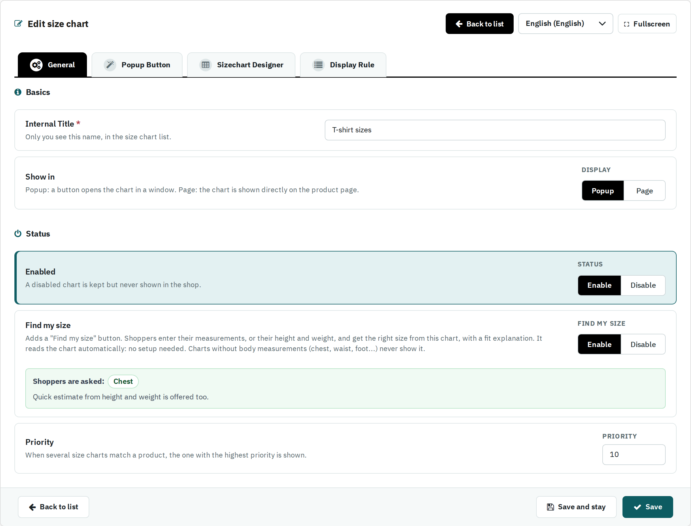

| Field | What it does |
|---|---|
| Internal Title | Only you see this name, in the size chart list. |
| Show in | Popup: a button opens the chart in a window. Page: the chart is shown directly on the product page. |
| Status | Enable shows the chart in the shop; Disable keeps it without showing it. |
| Priority | When several size charts match a product, the one with the highest priority is shown. |
| Find my size | Adds a Find my size button to the chart. Shoppers enter their measurements, or their height and weight, and get the right size from this chart, with a short fit explanation. No setup is needed: it reads the chart. It only shows for charts with body measurements, so name the rows or columns like Chest, Waist, Hips, Inseam, Foot length or Head. |